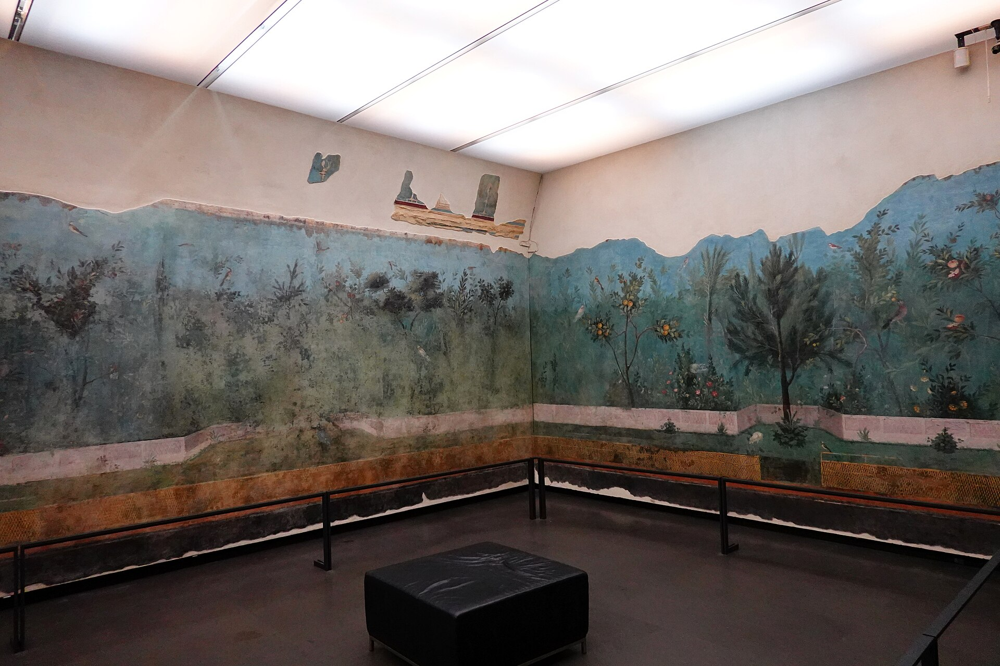
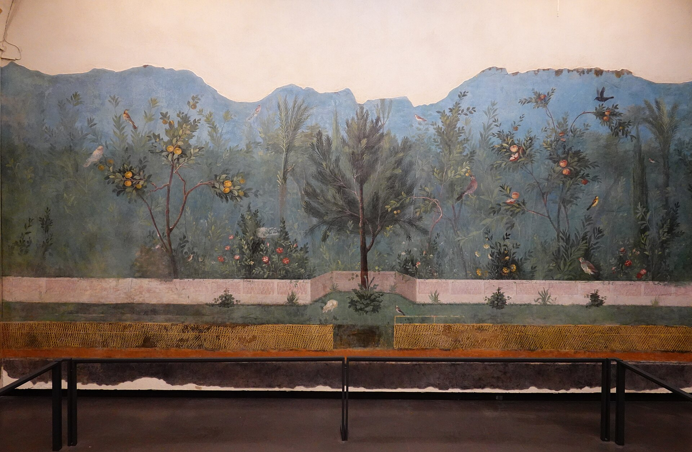
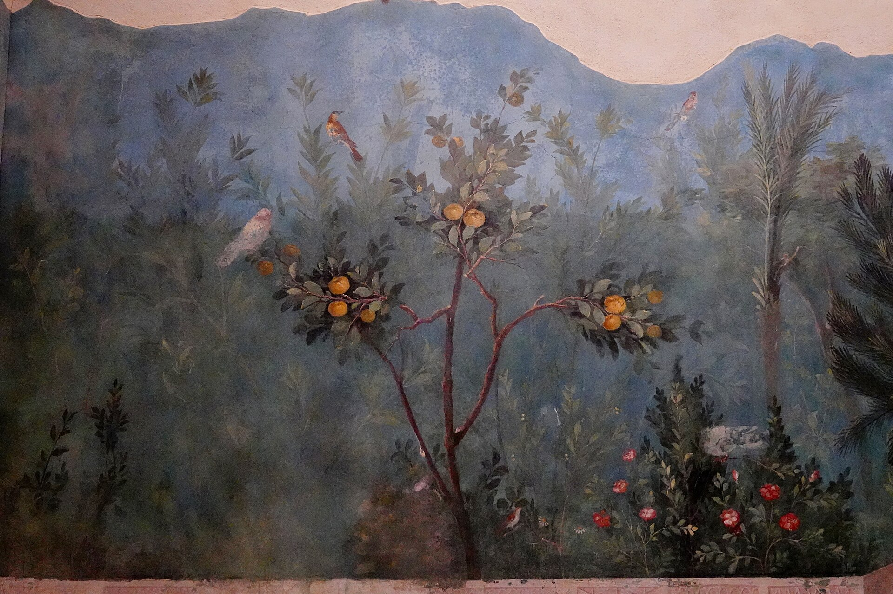

Receding space
Ways of making a flat picture seem deep. Overlap, smaller forms, and softer colors can make some things look farther away.
Artists unknown · Villa of Livia, Rome, c. 30–20 B.C.E. · Fresco


The low painted wall, middle row of plants, and taller trees behind it create layers. Birds perch in branches and fly through the scene, making a still wall feel full of life.

Look closely at the details: ripe fruit, feathers, branches, and tiny flowers. The blue-green shapes in back are softer and lighter, helping the garden seem to continue beyond the wall.
This room belonged to a villa owned by Livia, the wife of the emperor Augustus. It was underground and had no windows, but its walls were painted to surround visitors with a lush garden. Fruit trees, flowers, birds, and open blue sky make the small room feel connected to the outdoors.
The painters did not use one-point perspective, but they still create a sense of depth. A low wall stands closest to us. Plants rise behind it, then taller trees and a pale blue background seem farther away. Overlapping leaves and softer colors help our eyes read the painted wall as a space that continues into the distance.
This is also a careful study of nature. The painters included different kinds of trees, fruit, flowers, and birds. There is no main character or story to follow. Instead, the whole room turns into an imagined place—a calm garden that visitors could enjoy even while indoors.
Ways of making a flat picture seem deep. Overlap, smaller forms, and softer colors can make some things look farther away.
Made to trick the eye into seeing something that is not really there. This garden makes a solid wall feel like an open outdoor space.
A picture whose main subject is a view of land, plants, water, weather, or the outdoors rather than a person or event.
In the Early Medieval deck, you will meet A Family on the Move at Müstair, where a later fresco uses a wall to tell a Christian story instead of opening it onto a garden. In the Late Medieval deck, you will meet Giotto’s Lamentation, where natural poses and shadows make people and a rocky setting feel solid. In the Renaissance deck, you will meet Botticelli’s Primavera and Masaccio’s Holy Trinity, which each build a different kind of space.